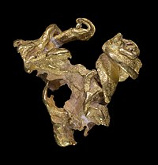

Ouro
Utilizações
- O ouro exerce funções críticas em computadores, comunicações, naves espaciais, motores de reação na aviação, e em diversos outros produtos.
- A sua elevada condutividade elétrica e resistência à oxidação têm permitido um amplo uso em eletrodeposição, ou seja, cobrir com uma camada de ouro por meio eletrolítico as superfícies de conexões elétricas, para assegurar uma conexão de baixa resistência elétrica e livre do ataque químico do meio. O mesmo processo pode ser utilizado para o douramento das peças, aumentando a sua beleza e valor.
- Como a prata, o ouro pode formar amálgamas com o mercúrio que, algumas vezes, é empregado em restaurações dentárias.
- O ouro coloidal (nanopartículas de ouro) é uma solução intensamente colorida que está sendo pesquisada para fins médicos e biológicos. Esta forma coloidal também é empregada para criar pinturas douradas em cerâmicas.
- O ácido cloroáurico é empregado em fotografias.
- O isótopo de ouro 198Au, com meia-vida de 2,7 dias, é usado em alguns tratamentos de câncer e em outras enfermidades.
- É empregado para o recobrimento de materiais biológicos, permitindo a visualização através do microscópio eletrônico de varredura (SEM).
- Utilizado como cobertura protetora em muitos satélites porque é um bom refletor de luz infravermelha.
- Cientistas indianos modificaram a química do material e o transformaram em "ouro negro", que, segundo eles, pode ser potencialmente usado para aplicações que vão desde a extração de energia solar até a dessalinização da água do mar.
- Pode potencialmente ser a base de enzimas artificiais que podem ser aplicadas em testes diagnósticos médicos rápidos e em pontos de atendimento e sistemas de purificação de água.

Abundância e obtenção

Por ser relativamente inerte, pode-se encontrá-lo como metal, às vezes como pepitas grandes, mas geralmente se encontra em pequenas inclusões em alguns minerais, como quartzo, rochas metamórficas e depósitos aluviares originados dessas fontes. O ouro está amplamente distribuído, e amiúde encontra-se associado ao quartzo e pirita. É comum como impureza em muitos minérios, de onde é extraído como subproduto. Como mineral é encontrado na forma de calaverita, um telureto de ouro. A África do Sul é o principal produtor de ouro, extraindo aproximadamente dois terços de toda a procura mundial deste metal.
O ouro é extraído por um processo denominado lixiviação com cianeto. O uso do cianeto facilita a oxidação do ouro formando-se (CN)22- em dissolução. Para separar o ouro da solução procede-se a redução empregando, por exemplo, o zinco. Tem-se tentado substituir o cianeto por outro ligante devido aos problemas ambientais que gera, porém não são rentáveis ou também são tóxicos.
Espalhado em toda a crosta terrestre numa baixíssima concentração média (5 gramas em 1000 toneladas), e mais baixa ainda nas águas dos oceanos (de 0,1 µg/kg a 2 µg/kg), onde se estima haver bilhões de toneladas de ouro mas de exploração economicamente inviável pelos métodos atuais (um trilhão de litros de água do mar contém 120 kg, ou 1 quilo em mais de 8,3 bilhões de litros, a água consumida por uma cidade como São Paulo em mais de 10 anos). As minas onde o ouro se encontra em teores econômicos têm geralmente acima de 3 gramas por tonelada; se o mesmo teor fosse encontrado no mar, 1 trilhão de litros poderia fornecer 3 mil toneladas de ouro.
O ouro como mercadoria
O mercado de ouro, assim como o mercado de ações, integra o grupo dos chamados mercados de risco já que suas cotações variam segundo a lei da oferta e da procura. No mercado internacional, os principais centros que negociam ouro são Londres e Zurique onde o ouro é negociado no mercado de balcão e não via bolsas. Outro grande centro de negócios é a Bolsa de Mercadorias de Nova York (COMEX) onde só se opera em mercado futuro. Há também nesta praça um forte mercado de balcão para o ouro físico.
As operações com ouro no Brasil
No Brasil, o maior volume de comercialização de ouro se faz através da Bolsa de Mercadorias e Futuros (BM&F), que é a única no mundo que comercializa ouro no mercado físico. As cotações do ouro, no exterior, são feitas em relação à onça troy, que equivale a 31,104g. No Brasil, a cotação é feita em reais por grama de ouro puro. O preço do ouro, no Brasil, vincula-se, historicamente, às cotações de Londres e Nova York, refletindo, portanto, as expectativas do mercado internacional. Sofre, entretanto, influência direta das perspectivas do mercado interno e, principalmente, das cotações do dólar flutuante.
Assim o preço interno é calculado diretamente segundo as variações do preço do dólar no mercado flutuante e dos preços do metal na bolsa de Nova York. O preço do grama do ouro em reais, calculado a partir do preço da onça em dólares (pela cotação do dólar flutuante) fornece um referencial de preços. Tradicionalmente, a cotação da BM&F mantém a paridade com este valor referencial variando 2%, em média, para baixo ou para cima. Existem dois tipos de investidores no mercado de ouro no Brasil: o investidor tradicional - que utiliza o ouro como reserva de valor -, e o especulador - que está à procura de ganhos imediatos e de olho na relação ouro/dólar/ações procurando a melhor alternativa do momento. Atualmente há dois mercados no Brasil para o ouro:
1.mercado de balcão - operações são fechadas via telefone; após o pagamento, o comprador tem duas opções deixar o ouro depositado em custódia em uma instituição financeira, levando consigo um certificado de custódia; retirar fisicamente a quantidade de ouro adquirida. 2.mercado spot nas bolsas - a entrega do ouro se dá em 24 horas, os volumes negociados são transferidos automaticamente entre as contas dos clientes em diferentes bancos, sem que o metal passe pelas mãos de quem negocia.
No mercado de bolsas, trocam se certificados de propriedade. Em qualquer caso, a responsabilidade pela qualidade do metal é da fundidora e não do banco, que é apenas o depositário.
Fonte: Wikipédia